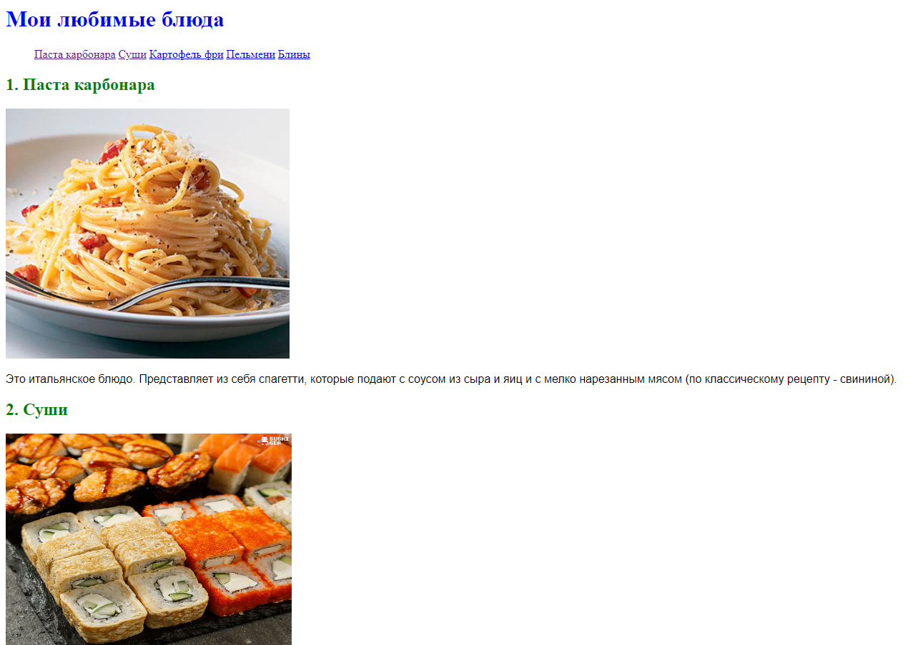
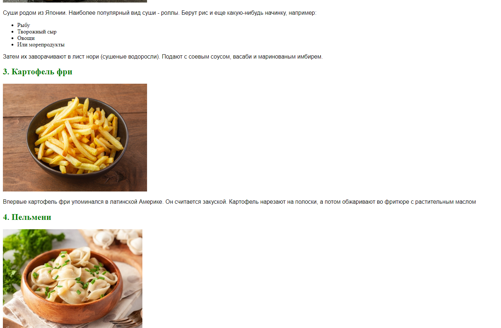
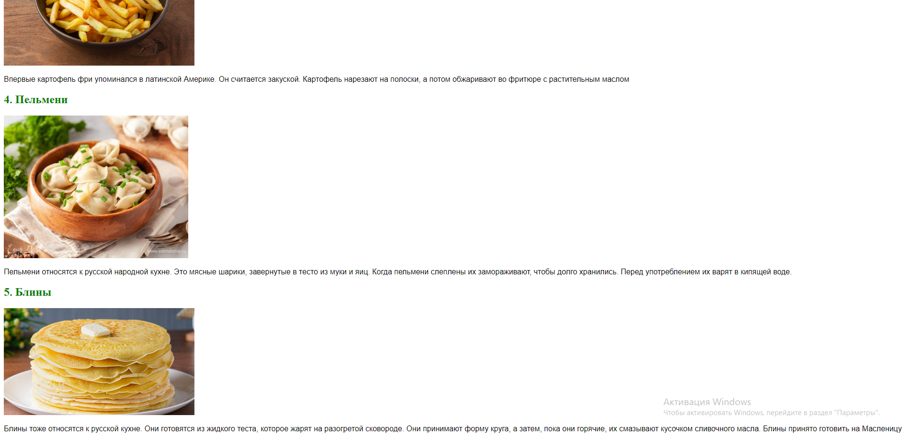
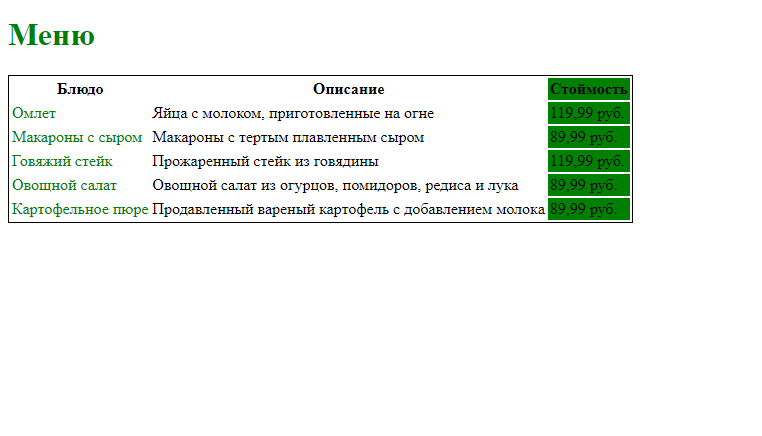
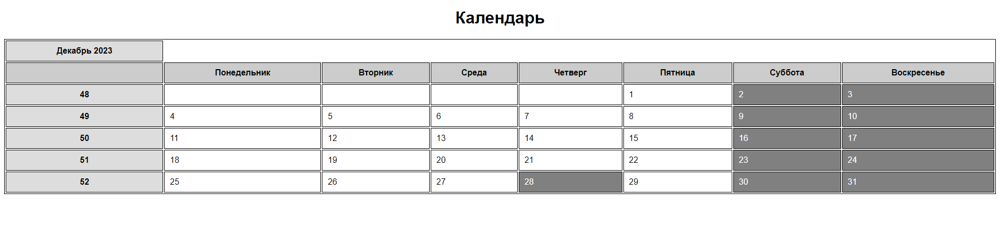
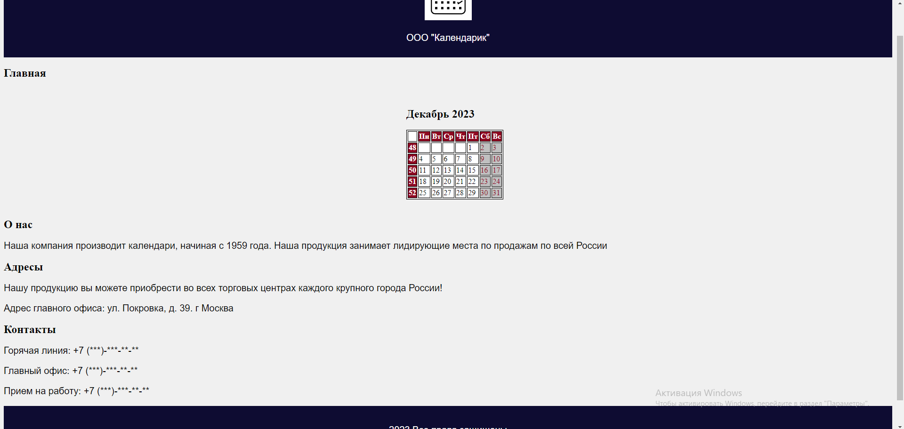
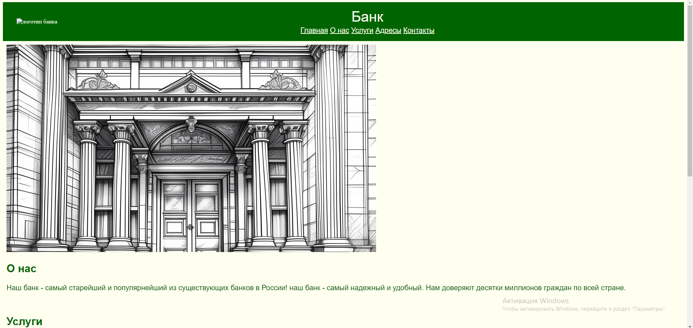
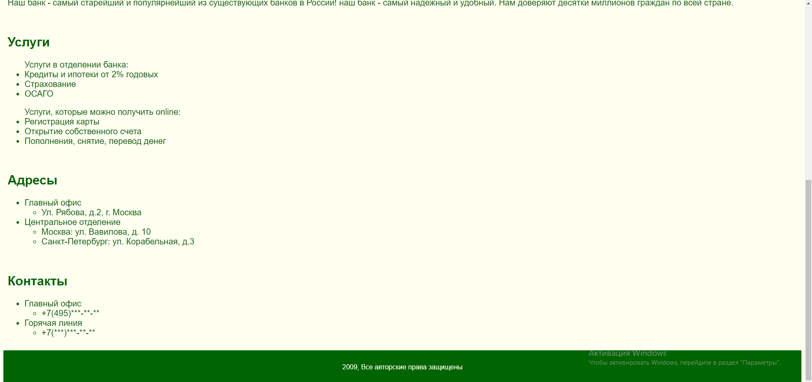
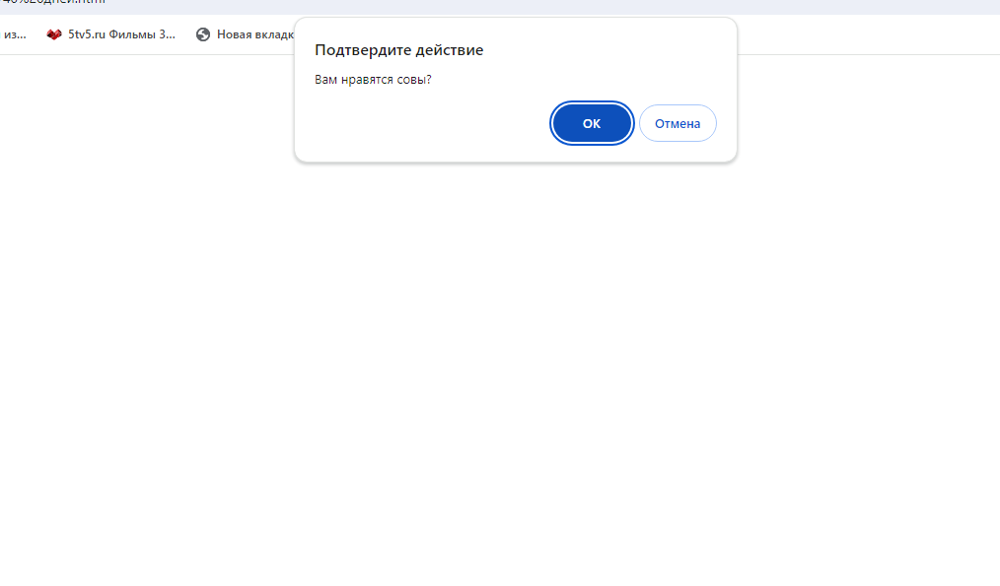
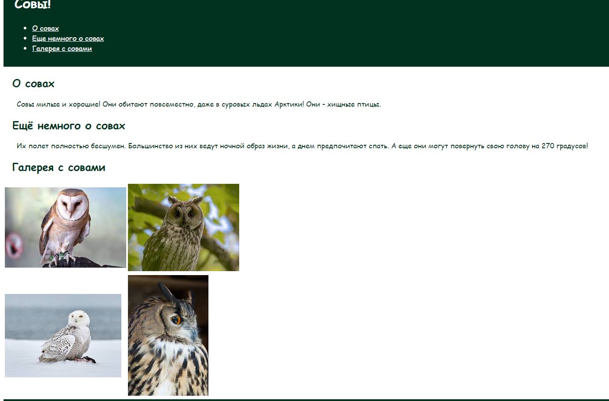

Немного о себе
Здравствуйте! Меня зовут Алексей, я живу в городе Химки Московской области. Уже в течении 2-х месяцев я прохожу обучение на курсе по программированию, который подготовил федеральный проект "Код будущего". На этой веб-странице я бы хотел показать вам некоторые свои работы в виде портфолио.
Мои работы:
-
Список любимых блюд
  Первым заданием являлась разработка своей первой веб-страницы. Я впервые ознакомился с HTML и поработал с заголовками, параграфами, изображениями, списками, а также с ссылками, изменил их стили.
-
Меню ресторана
На следующем занятии мы ознакомились с таблицами. На уроке мы практиковались с их созданием и стилизацией. На скриншоте вы можете увидеть то, как я справился с одним из заданий, составление меню ресторана.
-
Календарь
Затем я узнал про CSS и применение стилей с помощью внешнего CSS файла. В задании требовалось сделать календарь выбранного месяца, а также его оформление. Здесь была проведена работа с таблицей и с изменением стилей во внешнем CSS файле.
-
Сайт компании "Календарик"
Далее мы рассматривали создание шапки, главной части и подвала веб-страницы. Попрактиковались в создании и оформлении веб-страницы с сегментами "header", "main", "section", "footer", а также оформлением с помощью CSS.
-
Сайт Банка
 Подходя к концу обучения в первом модуле, практика на уроке включала в себя создания сайта компании, где мы продемонстрировали пройденный материал, изученный за первый модуль.
-
Сайт о любимом животном
 Также, на порследних двух уроках мы изучали язык JavaScript, который позволяет придавать интерактивность веб-странице. На практике мы показали, как создавать всплывающие окна на странице, еще раз попрактиковались в создании и стилизации сайтов